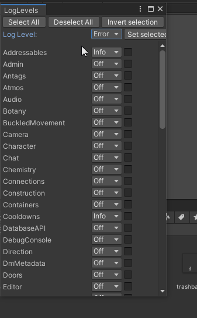

How to Map¶
This page explains the details of how to do mapping within unitystation.
All mapping is done in Unity.
Setting Up Your Workspace¶
You should have the following windows open. To open a window, to the Window tab at the top of Unity.
- Window > General > Scene
- Window > General > Project
- Window > General > Hierarchy
- Window > General > Inspector
- Window > Sidebar
- Window > Mapping/ ìÉ°ìÉ° Map Loader Saver Selector ìÉ°ìÉ°
Introduction to Maps¶
so First of all in the project window/view go to Assets/Scenes/DevScenes/EmptyMap.unity or just search for EmptyMap this should open an empty scene, On the Map Loader Saver Selector select which map you would like to load,
Wait a while it initialises and loads the map, Was it so did you can see the hierarchy of the Of all the different shuttles on the map, Commonly referred to as a matrix,
The hierarchy is made of Main object, two children, the first one that stores the layers that stores each tile type and The object layer that all the objects live underneath
And the other object handles any networked information you want about the Matrix
Getting Started¶
The processing of mapping depending on what type of scene you are mapping. In UnityStation, scenes are divided into the following scriptable objects:
Main Stations – where all the crew spawns at the start of the round
Away Sites – on the MainStation there is a portal which connects to one of these scenes which the player then jumps through when the connection is established in the middle of the round.
Additional Scenes – the scenes which the antagonists start on.
Here is a handy diagram which you can use if you want to add a new antagonist or job and ensure that it updates across all the scenes.
Test Runner¶
Can be accessed by ctrl + shift + T or Window > General > Test runner
Performs a variety of tests to check for Null references and other things. These tests are also used when you send a Pull Request. To run these tests, click Run All and then leave it for a while, it is not a quick process (use this opportunity to get something to eat/drink or some other professional/recreational activity of your choice).
Errors will be denoted by a red cross, click on the individual test which has a red cross and read the error that appears in the bottom box to fix up the Scene. Be sure to click Rerun Failed to see if you now pass these tests.
Tile Palette¶
Accessed by Window > 2D > Tile Palette
- The Tile Palette tab lets you place walls, floors, tables etc. into the Scene tab
- Make sure to select the right Active Tilemap in the Tile Palette when editing
Keep in mind when editing a Tile Palette that tiles are added to the palettes as they are created. To create a new Tile follow this example:
- Choose a tile from /Tilemaps/Tiles
- Drag a tile to a palette
Matrix Check¶
Accessed by Window > Matrix Check
This tool allows you to check out atmospherics details when you run the executable in the editor (temperature, pressure, etc. on each tile). Good for making sure you haven’t left a gap somewhere, make sure that you have __Gizmos__ enabled.
LogLevels¶
Accessed by logger > adjust log Levels 
Monitors certain variables when you are in play mode editor, displays them in the Console tab if they aren't set to Off. Useful for debugging your map.
Creating a MainStation Map¶
Part 1 - Populating Underfloor And Electrical Items¶
Tip
Before you hook up your lights and light switches, be sure to read the Map Tips at the bottom to familiarise and it make it easier for yourself.
Electrical¶
- Make a json File in Assets/StreamingAssets/Maps/MainStations You may need to right click on one of the files and so on Explorer to make the json file or you can just copy One of the Other maps
- Open up EmptyMap Scene
- Load up one of the stations you want to copy stuff from, Delete all the objects and go through and right click each tile map you want to clear and click reset
- Next you will want to designate where the departments should go and how big they should be. Move the spawn points to generally mark out the areas so you can keep track of where everything is going. How you approach the rest is up to you, Part 2 and 3 below is a suggested method for you to use if you wish. Consider then mapping in all the power cables, atmos pipes and disposal pipes. This is all the important life support stuff that makes the station function. This step can be done at any time, however, a lot of LighTubeFixtures, * LightBulbFixtures, AirVents, Scrubbers, Pumps, Mixers, GasConnectors, Filters, * UnaryVents, Metres and DisposalBins** prefabs are required for the station to run. See Part 2 step 2 for details on how to add existing prefabs onto a map.
- For the meanwhile why your mapping you can save to the scene directly and when you want to save it properly click save in the Map Loader Saver Selector You may need to open and close it again if your file isn't visible
note
To play in your scene, Simply check the checkmark next to the map on the Map Loader Saver Selector Window and Press play
Assets/Prefabs/Items/ItemMatrixSystems/AI_ShouldNavigateAround.prefab That needs to be added to your matrix that you want AI shuttles to navigate around
UnityStation’s Electrical Wiring differs from base SS13. Follow the guide below to make sure you correctly hook everything up. Make sure to always put a machine connector (white square in diagram) on the lower voltage side of the device. If you are still stuck, consult the wiring on SquareStation map and inspect the relevant prefabs.
Tip
It is strongly encouraged to avoid mapping underfloor utilities (wires, atmos / disposal pipes) under walls, windows. doing this will allow players who are playing the engineer role the ability to debug the wire pathways to find a fault without ever having to deconstruct a wall or window in the way. If it is unavoidable, that's ok, but don't make a habit of it.
Atmospherics¶
The atmos pipes are colour coded to help keep track of a specific function, use the following convention:
- Silver/Purple Pipes – These pipes are the internal pipes for the department which connect up to GasConnectors, these connectors allow an atmos tech to pump gas into/out of a gas canister into the pipes.
- Light Blue – These pipes connect up the canisters of nitrogen and oxygen that everyone will be breathing. They replace the yellow pipes for the air canister and connect directly to the blue pipes.
- Blue – Exports Gas out into the Station to the AirVents
- Red – Imports Gas back into the Atmospherics Department from the Scrubbers
- Green – Connects to Red Pipes has Filter prefabs littered through is section to filter out each gas to its specific canister chamber
- Orange/Yellow – Connects to pumps to pump out gas from a particular gas chamber, yellow pipes connect up to the end of the Green and Blue pipes
The atmos prefabs have been laid out so you do not need to tinker too much with them, be sure to select the right one for the job. Here is a general guide to explain what prefab does what.
- GasFlowMeter to be attached to pipes inside the atmos department, GasFlowMeterAtmosWasteLoop to attach to red pipes outside of the atmos department and GasFlowMeterDistrubutionLoop to attach to blue pipes outside of the atmos department
- GasFilter(GAS-NAME) and GasFilter(GAS-NAME)Flipped are filter prefabs which sit on an empty tile connected to tiled pipes. They filter a particular gas out, usually into a designated atmos room.
- GasMixerAirMixer, GasMixerOff, GasMixerOffFlipped, GasMixerOn, GasMixerOnFlipped are mixer prefabs which mixes two gases together in a particular proportion. The "Air" that the crew breathes on the station has been deliberately set in the AirMixer, make sure you use that one in the department.
- GasPumpOn, GasPumpOff are the pump prefabs which are set to be on and off when the round starts.
ACUs (air alarms) allow atmospheric technicians to control the local room's atmopshere, but they're useful to
everyone as it allows you to quickly gauge a room's atmospheric state. ACUs should be as similarly common as APCs.
Consider placing these in high-traffic areas where they're easily observed. Any connected ACU device (scrubbers, vents)
can act as a sensor for the ACU, optionally including the tile in front of the unit itself. If the ACU is not directly
in the room that it monitors, such as SM core, server room or (at least temporarily, until we have atmospheric tank
control consoles) atmospheric tanks, then be sure to turn off Acu Samples Air in the AirController component so as
not to skew the monitoring. There are several AirController presets designed for particular rooms in mind, like cold
rooms, server rooms etc - be sure to take a look for special usages.
Disposals¶
The Disposal System is straightforward to map in if do the following steps. Be sure to connect the ConveyorSwitch prefab to the relevant ConveyorBelt prefabs.
- Mark where you want your DisposalBins by click-and-dragging the prefab onto the scene, ensure that all bins are on the object layer when you are done placing them.
- Designate the Mail Room in Cargo. Then add in a DisposalOutlet prefab connected a couple of ConveyorBelt prefabs leading to a DisposalInlet prefab.
- Designate the Disposals Room, this room needs to be on the outer most part of the station to eject trash into space. In this Room you need a DisposalOutlet prefab connected up to a couple of ConveyorBelt prefabs leading to an opening in the wall to space, but stop one tile short. A BlastDoor prefab will over the opening and will have a TinyFan underneath. A MassDriver prefab will go inbetween the ConveyorBelt and the BlastDoor, it is responsible for launching the trash. Link up a ButtonDoor to operate the BlastDoor and a ButtonMassDriver to operate the MassDriver.
- Open Tile Palette > Disposals and place one receiving pipe (the tile with the circle) underneath all the DisposalBins/DisposalInlets/DisposalOutlets, then map all the pipes taking care to orient all the pipes towards the Mail Room's DisposalOutlet. Then connect the Mail Room's DisposalInlet to the Disposals Room's DisposalOutlet.
Part 2 - Placing Walls and Prefabs¶
To help with completing Part 3, click and drag all prefabs onto the scene, select them all in the Hierarchy and drag them into the Matrix’s Object layer when you feel you are finished.
- Add in the Walls to designate the rooms, relevant floor tiles and tables to populate the rooms. Remember that floor tiles are not present in maintenance areas, unless it is in a room coming from a corridor.
- To place objects into a scene search in the File manager with the prefab filter on, then click and drag the prefab onto the scene. All objects you place will need to go on the Station Matrix’s Object layer in the Hierarchy. (To avoid having to click and drag the list of prefabs into the object layer, highlight all the objects, click cut and then right click on the Object Layer and select Paste as Child). IMPORTANT: make sure you keep consistent unique number or attach an “_name” (e.g. APC_Kitchen), this will help a lot when you need to add in references to other prefabs, as you can tell them apart.
Part 3 - Adding and linking in all the other Prefabs¶
- Add in all the other prefabs. Don’t worry if you aren’t getting the x,y co-ordinates close to the centre of a grid
square, the Custom Net Transform always has Snap To Grid enabled, so it will have perfect co-ordinates in-game. If
you like, you can also use the
Mapping > Snap to Grid All Applicable Objectstool to ensure this before runtime. - As you progress placing the objects down onto the matrix, make sure you modify the relevant fields on the prefabs so
that they can be referred to by the other relevant prefabs. You can use the
Tools/Mapping/Device Linkertool to assist in linking certain objects together, like APC devices to APCs. Each device can also be linked via the controls on the relevant component. For example, on
Each device can also be linked via the controls on the relevant component. For example, on APCPoweredDevice. You can see that the selected Fire Alarm is connected to the APC and to three firelocks, the quantum pad is not
connected to an APC and the console is not connected to some sort of device - these two need attention.
You can see that the selected Fire Alarm is connected to the APC and to three firelocks, the quantum pad is not
connected to an APC and the console is not connected to some sort of device - these two need attention.
The best way to see what prefabs relate to what is to open an existing map and turn on gizmos. Make sure all of the gizmos are turned on and if a line exists between the prefab and another, then a relationship exists. As there are a multitude of components that can exist on a prefab, it is best to read through them to understand what they are doing and what they need, some have tooltips to help. Always remember you can look at existing maps to see how the prefabs are connected. - All Shuttles need plasma thrusters and a console to be palatable , you need to hook up pipes to each plasma thrusters well + a connector to connect the plasma tank
- Use the
Tools > Mapping > Name Validatortool to ensure certain objects have appropriate names.
Asteroids and Ruins¶
Asteroids and ruins are different obstacles Shaft Miners, Curators or Assistants can stumble upon on their travels. Asteroids primarily serve as Ore Deposits for Shaft Miners, sometimes they also have exotic plants or mobs to fight as well. Ruins are derelict stations or shuttles for the players to explore. Copy an existing asteroid or ruin scene inside the AsteroidScenes Scene Folder to get started, make sure you define the location of your scene to somewhere well away from (0,0) otherwise it will spawn inside the station.
and Include the corresponding stuff in Assets/Prefabs/Items/ItemMatrixSystems/ Most importantly make sure to add the asteroid system as an object It also contains stuff like such as AI navigate around so the escape shuttle doesn't drive itself into the asteroid And there's other stuff for setting the default gas mix
Asteroid Tips¶
- If you want your asteroid to have exotic plant life, put in the random dirt pile prefab. The Potential Wild Plants list can be adjusted so whatever plant you want can spawn there.
- If you want your asteroid to have mobs for players to encounter, use the RandomItemPool prefab and in the Random Item Spot component increase the Pool List and select either CarpSpawner, Alien egg etc. from the list. 2%XenoEgg or the NPCs can also survive on an Asteroid too. If you don't want your mobs to fly off your asteroid, make sure to enclose them in rock.
Ruin Tips¶
- You can wire up your ruin electrically as much as you want, make sure to use the damaged tiles and cracked windows in the Tile Palette to give it a really rundown feel.
- You may want to include some lore about why this ruin exists, if you put in a Paper prefab into the scene and select its Paper Component you can fill out its text field to your heart's content. A list of all available tags to stylise it can be found here (Rich Text | Unity UI | 1.0.0 (unity3d.com).
Shuttles¶
One thing to keep in mind is that it can be a bit fiddly with AI Movement, on determining which ways the front, a good rule of thumb is that if there's no rotations applied to the shuttle the front should be facing up

To extend the shuttle matrix out select the correct matrix in the Tile Palette Window and paint some tiles, as long as you have gizmos turned on, you should see the bounds snap to accommodate the new tiles. Again, the shuttle matrix does not have a directional component, so you will need to make sure you orientate your shuttle correctly.
A shuttle should have the following prefabs to make it function:
- Shuttle Console, usually located at the front of the shuttle to pilot the matrix
- CanisterPlasma and a Wrench to provide the fuel and means to secure it
- Canister connector which the canister will need to be wrenched down onto to power the shuttle
- Plasma thrusters in all four cardinal directions and set as so
- Pipes connecting the canister connected to the thrusters which the canister will need to be wrenched down onto to power the shuttle
- Shuttle Chairs for pilot and passengers, as well as Lighttubes and Doors
for Stuff like the escape shuttle and cargo shuttle you have to specify the path when approaching the station with buoys That specify the chain of entering and entering out again, The first in the chain needs to be referenced by for the cargo shuttle the cargo shuttle computer and escape shuttle escape shuttle consul, Advice do not have the approach path directly into the station without many buoys, Since the server can have a lag spike and the shuttle can overshoot Crashing into the station, so ideally the cargo or sceptical should align itself alongside, so it overshoots It doesn't damage anything, If it Has to approach where it would overshoot and damage stuff, add a buoy A tile apart maybe 5 tiles away from the target point to make sure it comes in gently
The Cargo shuttle must not have any live animals on board and have shutters which link to a door button in the Cargo Loading Bay.
The Escape Shuttle must always have the following extra prefabs:
- An EscapeShuttleConsole for the antag objectives involving hijacking it
- At least three different areas, general access, command access and security access for prisoners
Mapping Guidelines and Pointers¶
so, Objects can be rotated however if they have the rotatable component it is best to use that instead since that handles game logic better e.g sprites getting changed when pushed around
Various objects which already have directional facing logic, such as wallmounts and chairs, can have their direction set by adjusting Directional's Initial Direction field.
Map Tips¶
Here are some general tips to help you get when mapping in UnityStation:
-
Do not attempt to try and finish your map from scratch in one sitting, it is better if you break it down into sections.
-
If you find yourself unable to place tiles from the Tile Palette and are receiving a ton of warnings, it may be because you are missing a layer in the matrix. Duplicate an existing layer in the matrix and perform the necessary changes before trying to place anymore tiles.
-
Attaching an APC can be quite tedious, but can be made a lot easier if you place the APC first, relabel it and then attach the APCPoweredDevice by moving it close to the APC and hitting the Auto Connect Button.
-
If you have a lot of APCPowered Objects you need to connect, On each APC powered device there should be a button to find the nearest apc, make shorter term gizmos to see the full information it can display
-
Make sure for jobs that will have 2 or more signing up to them that you have placed multiple spawn points in the department – this ensures that players do not spawn ontop of each other. To do this, copy an existing spawn point , alter its position and spawn name.

- So you can see what you are placing tile-wise on a particular layer, you can select obstructing layers to hide in the Hierarchy. You then can press the crossed-out eye above the scene view window to toggle the layers’ visibility.
- Walk around as an assistant in Play Mode to see what you can and can't access. This is important as a large majority of first time players will be this and will go wherever they can.
If you are ever stuck mapping in UnityStation first try looking at how the current maps work, what components make up an object. If all else fails, please message the mapper channel on Discord.
Wallmounts¶
Wallmounts always appear upright, but you need to indicate which side of the wall they are on (they should only be visible from one side of a wall). To do this, simply set the Directional component's Initial Direction to the direction it should be facing.
Enabling Gizmos for WallmountBehaviours will show helper arrows so that you wouldn't need to guess their direction:

Pull Request a New Map Scene to the Repo¶
Once you have finished mapping a scene and it’s time to PR, follow the instructions below so it gets submitted first time without needed rework. If you are working on an existing map, you only need to commit and PR the .json file.
-
Make a new branch by opening GitHub Desktop and pressing Ctrl + Shift + N and typing the name of your map. Make sure to bring your changes over from develop if you have already started making progress on a new Scene.
-
Run the Unit tests. These can be accessed in editor by going into the sidebar menu or selecting the U logo on the right bar.
-
If the scene you have created is a Main Station, add its path (You can copy it in the map Saver window) into to the map.json file. This file keeps track of what maps to randomly select from given the server population (low, medium, high pop).
-
Next you will need to add the created scene into a Scriptable Object List. Search in the editor for the following.
- If it is a Station where the crew will spawn in, add it into the Main Station List SO
- If the scene is a scene which connects to the Station Gateway, add it into the Away World List SO
- If the scene is an asteroid (contains ores to mine), add it into the Asteroid List SO
- If the scene is an antag spawn area or some other scene that doesn’t fit into the ones above, add it into the _ _Additional Scene List SO__
Checklist¶
Make sure you go through the checklist below to check you have gotten the following on the map. Players will have a hard time using your map if it doesn't have these items!
- In the Captain's Room, there should be a Nuke Disk, Nuke Pointer and a Captain's Spare ID
- Make sure that Security has Cell Timers and Secure Windoors to hold prisoners in the brig cells
- Fire alarms have been connected to the FireDoors
- AirVents and Scrubbers are rotated correctly to match the particular pipe outlets from adjacent tiles
- RCS thrusters are present on shuttle matrixes, test each shuttle in play mode to make sure they follow the directions like the WASD keys.
- Multiple spawn points exist for the same job and that all jobs have a sensible spawn point
- Check that Canisters in Atmos that are part of the pipes are open (Tick Valve is Initially Open inside the Canister Script)
- Ensure that no obvious extrusions will destroy or block the cargo and evac shuttle
- Directional Signs to help players navigate to each department (Prefabs are called SignDirectional)
- If it's a MainStation, include a picture of your map for the wiki
- Commit MainStation.unity, MainStation.unity.meta, MainStation.lighting, MainStation.lighting.meta, maps.json, EditorBuildSettings.asset and the SO List (e.g. Main Station List SO). This is not an exhaustive list, so a general rule of thumb is to only commit files you touched.
Pull Requests for Tile Palette Changes¶
Almost never would you need to actually PR a palette change, if you do please make sure NOT to include anything other than the palette file and its .meta file.